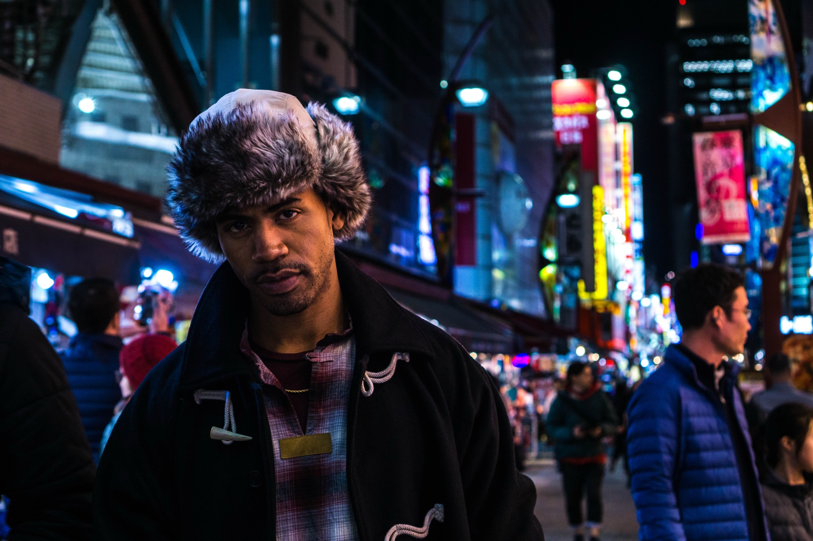
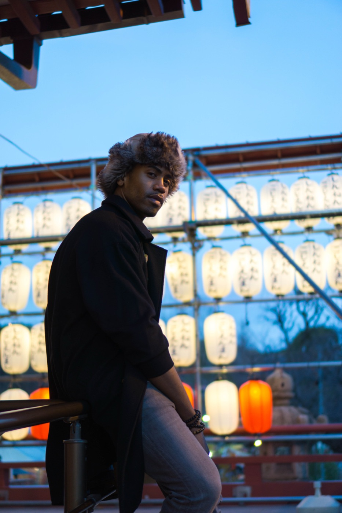
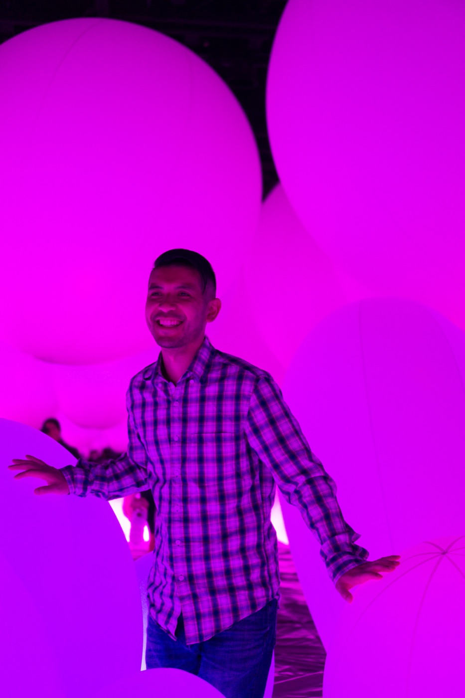
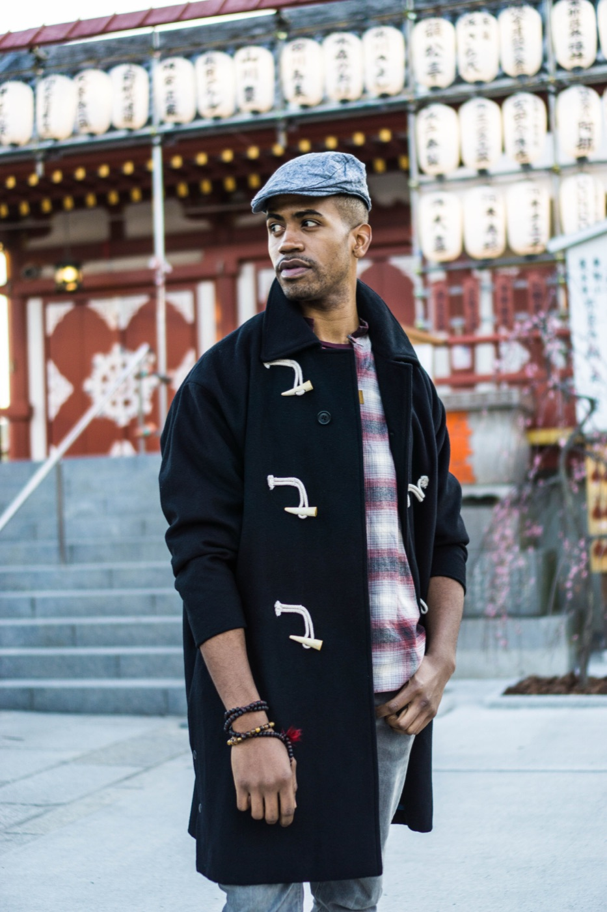
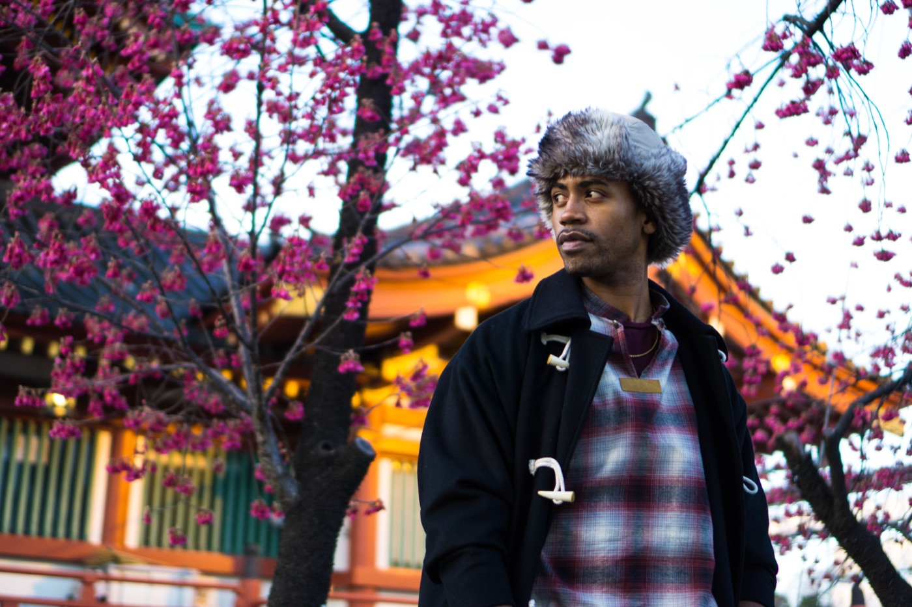
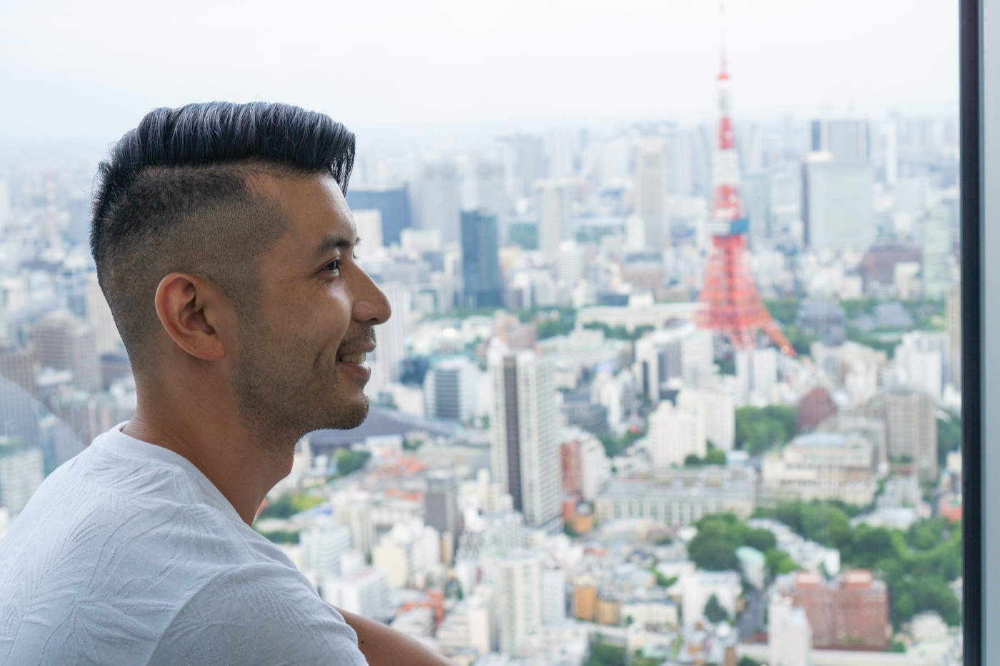
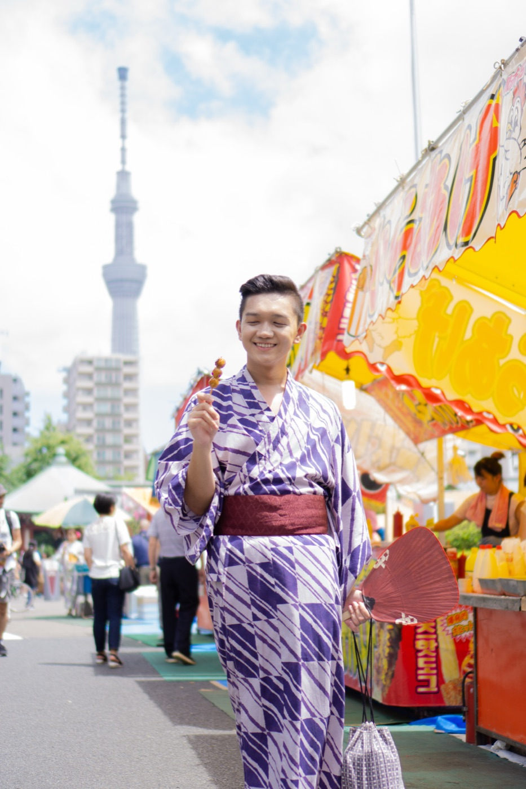

> initializing portrait_engine ▮
Night portraits & street sessions — Berlin // Tokyo // Vancouver.
Same photographer. Different wavelength.
$ cat siskind.txt
— Aaron Siskind
"Photography is a way of feeling, of touching, of loving. What you have caught on film is captured forever… it remembers little things, long after you have forgotten everything."
> ./night_archive --filter=neon






> whoami
Portrait photographer from Vancouver, Canada — now calling Berlin home. It started in a high-school darkroom: film, chemicals, black-and-white prints appearing by hand. Watching an image come to life felt like magic. It still does; only the light sources changed.
Eight years as a studio photographer taught me how to put people at ease and catch genuine expressions in seconds. By day I photograph individuals, couples, and families. After dark, the city becomes the studio — neon, lanterns, and rain-slick streets.
OPEN CHANNEL> ls ./sessions
from $250
45 minutes through neon districts and lantern alleys. For individuals and couples who want the city in the frame.
from $250
The daylight original — milestones, headshots, or just because. 25+ edited images, zero dystopia.
from $350
60–90 minutes, outdoors or at home. Any size party — pets welcome in the crew. 40+ edited images.
> open --channel=booking
Send a note with a little about you and what you have in mind. Reply within one business day — availability, next steps, no bots.
EMAIL TO BOOK ↗prefer daylight? switch to the classic site →